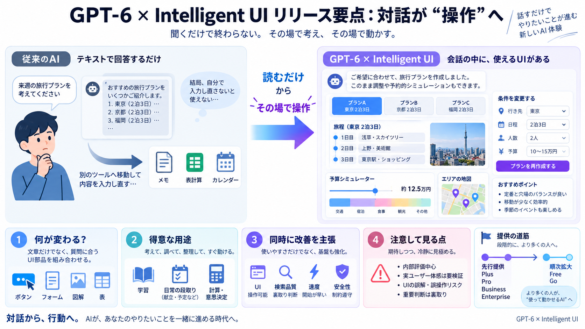

Safety Overview: GPT-6 Astra - Cornford and Cross
OpenAI released GPT-6 Astra on September 3, 2026, marking the company’s first model to reach the Critical cybersecurity …

説明を読んで、別ツールで入力し直す手間
会話の中で、そのまま“進められる形”に
操作可能な部品を会話内に組み込み
理解だけで終わらず、進行・計画をその場で
質問の種類から必要なUIを決める
ボタン・フォーム・図解などを組合せ
コンポーネント基盤で一貫性を保つ
対話的な図解で理解を補助
献立のメニューやタイムライン可視化
割り勘・貯蓄シミュレータ等の“場作業”
検索が必要な質問で開始が早い
検索を伴う回答の裏取り・判断が改善
会話が操作可能な形に
検索が必要な質問の判断が改善
回答開始が早まる
高リスク悪用への耐性（多ターン回避への抵抗も言及）
無害な依頼には不必要な拒否を避ける設計
Plus / Pro / Business / Enterprise
Free / Go へ
段階的に運用・観測しやすくする
実ユーザーで同等の体感になるかは別問題
UIが増えるほど誤解・誤操作の可能性も上がり得る
学習・段取りでは、図解や操作部品が効きやすい
重要判断は前提確認・公式情報での裏取りを継続
インタラクティブUI特有の指標
成功率・満足度・学習コスト
指標カテゴリ／先行表示の安全対策
OpenAI released GPT-6 Astra on September 3, 2026, marking the company’s first model to reach the Critical cybersecurity …
The GPT-6 Astra release date is now confirmed: OpenAI officially released GPT-6 Astra on September 3, 2026. As of Septem…
| GPT-6 | | Developer | OpenAI | | Release | September 3, 2026; 31 days ago (2026-09-03) (limited preview of Astra) | |…
illustration of a model passing a verification gate for the GPT-6 Sol release model-release ### GPT-6 Release Dates: Ast…
## More on OpenAI GPT-6 Astra cheated at StarCraft by running the top human-written bot, its tester saysOctober 4, 2…